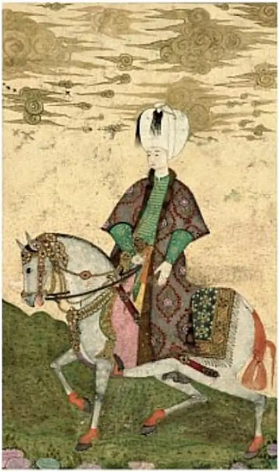

Wojny i niewola
Mauzoleum sułtana Ahmeda I – grób Osmana II
Tu spoczywa sułtan Osman II, który w 1621 roku stanął pod Chocimiem naprzeciw hetmana Chodkiewicza – a kilka miesięcy po powrocie z tej wyprawy stracił tron i życie.


- Temat
- Wojny i niewola
- Dzielnica
- Fatih
- Okres
- 1621–1622
- Zwiedzanie
- Otwarte dla zwiedzających
Historia
W tym mauzoleum spoczywa sułtan, który w 1621 roku poprowadził armię pod Chocim, przeciw obozowi hetmana Jana Karola Chodkiewicza: młody Osman II sam dokończył grobowiec ojca w 1619 roku, a zaledwie trzy lata później pochowano go w nim potajemnie.
Osman wstąpił na tron w 1618 roku, niespełna czternastoletni. Latem 1621 roku poprowadził ogromną armię nad Dniestr, przeciw obozowi wojsk polsko-litewskich i kozackich pod Chocimiem. Obroną dowodził hetman Jan Karol Chodkiewicz, który zmarł w oblężonym obozie, a po nim Stanisław Lubomirski.
Jak zwiedzać
Mauzoleum stoi we własnym ogrodzonym dziedzińcu po północno-wschodniej stronie Błękitnego Meczetu, przy placu Sultanahmet. To czynne miejsce pochówku: obowiązuje skromny strój, a buty zdejmuje się przed wejściem. Zwykle jest otwarte za darmo, ale godziny bywają skracane w czasie modlitw i świąt – sprawdź na miejscu. W środku spoczywa 36 trumien, m.in. Ahmeda I, jego żony Kösem, Osmana II i Murada IV; zwróć uwagę na płytki z İzniku i drzwi z hebanu wykładane masą perłową i kością słoniową.
Postaci
- Osman II
- Ahmed I
- Jan Karol Chodkiewicz
- Stanisław Lubomirski
Położenie
Fatih, Stambuł · Współrzędne: 41.00678, 28.97703